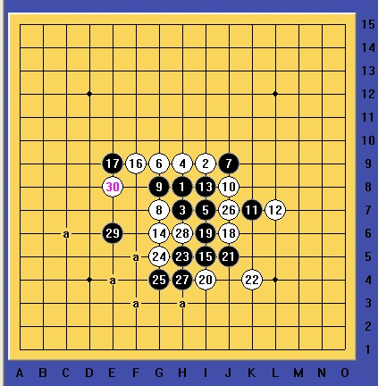

VCT9{*日月齐辉*}
#1 VCT9{*日月齐辉*} 作者：自来水 发表时间：2012-4-18 9:35:37
 个人自编VCT —— 日月齐辉
个人自编VCT —— 日月齐辉
至于盘面上两颗黑白子...你们懂的
［此帖子已被 自来水 在 2012-4-18 9:36:30 编辑过］
#2 Re:VCT9{*日月齐辉*} 作者：自来水 发表时间：2012-4-18 9:39:09
 各位可以先看看有没有VCT的简单解，不是VCT就自己留着吧，做棋取胜的手段一坨一坨的...
各位可以先看看有没有VCT的简单解，不是VCT就自己留着吧，做棋取胜的手段一坨一坨的...
#3 Re:VCT9{*日月齐辉*} 作者：山城刀客 发表时间：2012-4-18 11:32:06
我是这样杀的

31手换了几种杀法，不知道这步算不算纯VCT。
附上棋谱：
 1.rar
1.rar
#4 Re:VCT9{*日月齐辉*} 作者：自来水 发表时间：2012-4-18 11:42:22
VCT的简单判定方法就是，必胜方每一手棋，下一手必然有VCF手段
LS到这里就不算VCT了，黑下面没有VCF..
再次提醒：此题棋的位置（黑1不在天元），一黑一白两子都是有用的...
［此帖子已被 自来水 在 2012-4-18 11:44:00 编辑过］
#5 Re:VCT9{*日月齐辉*} 作者：小小亦默 发表时间：2012-4-18 13:06:56
哪里来的日月啊 大神#6 Re:VCT9{*日月齐辉*} 作者：山城刀客 发表时间：2012-4-18 14:03:01
哎，自己开始想的太复杂了，有时答案其实很简单，可就是想不到。
原来如此！！！……
#7 Re:VCT9{*日月齐辉*} 作者：山城刀客 发表时间：2012-4-18 14:30:19
a1路应该是纯VCT吧！
棋谱：
1.rar
［此帖子已被 山城刀客 在 2012-4-18 14:33:04 编辑过］
［ 自来水 于 2012-4-18 16:22:52 时花20金币送鲜花一朵］
［ 自来水 于 2012-4-18 16:23:34 时花20金币送鲜花一朵］
#8 Re:VCT9{*日月齐辉*} 作者：自来水 发表时间：2012-4-18 16:16:16
嗯，a1路是纯VCT
［ 山城刀客 于 2012-4-18 16:29:53 时花20金币送鲜花一朵］
#9 Re:VCT9{*日月齐辉*} 作者：自来水 发表时间：2012-4-18 16:33:25
看来还是存在简单解...利用右上角的走法就不详解了。。要弄出唯一解，这题目还得再改改